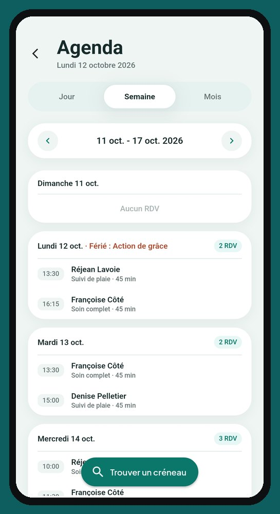

L'agenda pensé pour la route, pas pour un bureau.
Quand on soigne à domicile, un rendez-vous, c'est aussi un trajet. L'agenda de CliniQ Pro tient compte des deux.
L'essentiel dès l'ouverture
L'accueil va droit au but : vos rendez-vous du jour, ce qui reste à compléter et les oublis à corriger. Pas de menu à fouiller entre deux patients.

Un toucher, et le GPS part
L'icône d'itinéraire d'un rendez-vous ouvre le trajet dans le GPS de votre téléphone. Plus d'adresse à recopier dans l'auto.
Placer un nouveau rendez-vous sans zigzaguer
« Trouver un créneau » propose des heures libres selon la ville et la durée de la visite. L'application vous avertit aussi si le temps de déplacement entre deux rendez-vous paraît trop court.
Sur votre téléphone ou votre tablette
Le même compte fonctionne sur votre téléphone et sur une tablette. Vos patients n'ont rien à installer : seule la professionnelle a un compte.
Questions fréquentes
L'application m'aide-t-elle à placer un nouveau rendez-vous ?
Oui. « Trouver un créneau » propose des heures libres selon la ville et la durée de la visite, et vous avertit si le temps de déplacement entre deux rendez-vous paraît trop court.
Mes patients doivent-ils installer quelque chose ?
Non. Seule la professionnelle a un compte. Vos patients n'ont rien à installer.
Ça vous intéresse ? Écrivez-nous.
Écrivez à notre soutien : soutien@cliniqpromobile.ca. Nous lisons tous les messages.
Les fonctions
- Dossier patient et notes
- Reçus et factures
- Kilométrage automatique
- Dépenses et comptable
- Registre de stérilisation
- Services à domicile, tout-en-un